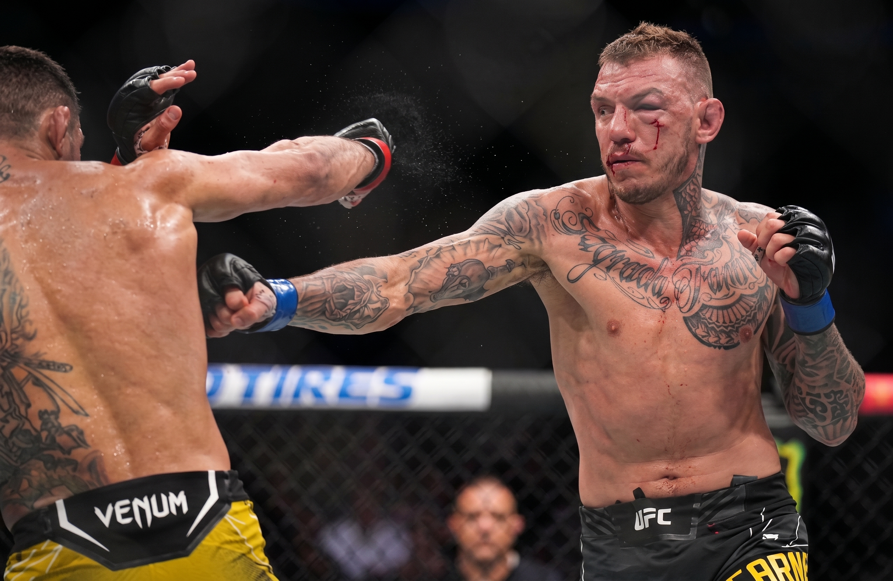
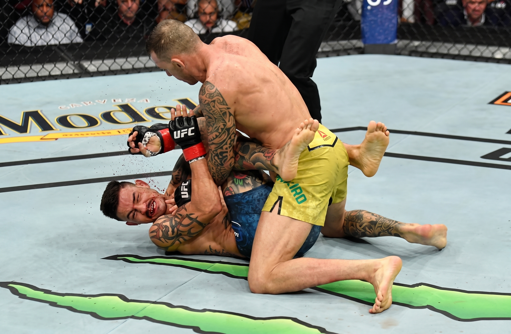
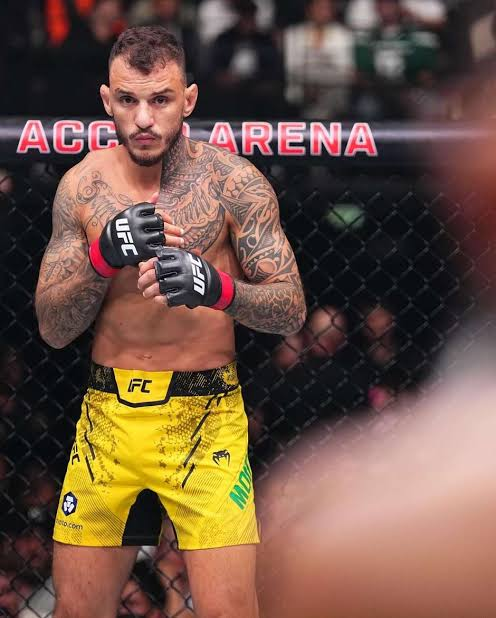
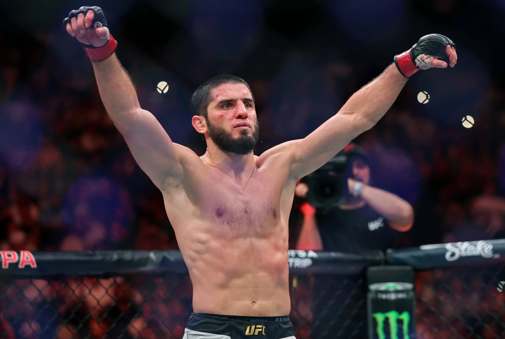
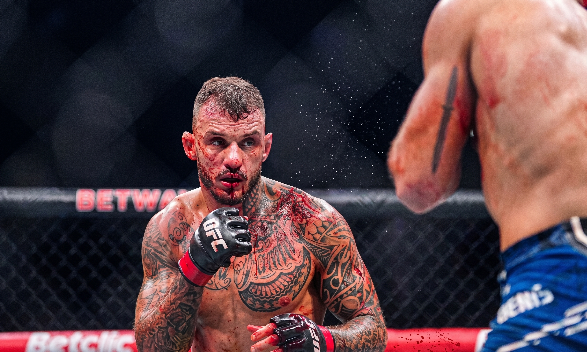

RENATO MOICANO
A ASCENSÃO DE MONEY MOICANO
Renato Moicano construiu sua trajetória no MMA através de anos de dedicação, técnica e evolução dentro do octógono.
Renato Moicano construiu sua carreira enfrentando alguns dos nomes mais duros do MMA mundial e se destacou principalmente pela qualidade do seu jiu-jitsu, pela agressividade e pela capacidade de buscar finalizações.
Com o passar dos anos, além das performances dentro do octógono, uma nova personalidade começou a chamar a atenção dos fãs. Nascia o "Money Moicano", uma versão mais irreverente, confiante e direta do lutador brasileiro.

MOMENTO • UFC 227
UMA FINALIZAÇÃO PARA O MUNDO VER
Em uma das atuações mais marcantes de sua trajetória, Renato Moicano mostrou toda a força do seu jiu-jitsu.
Renato Moicano mostrou toda a eficiência de seu jogo de chão ao superar Cub Swanson por finalização no primeiro round.
Após um início intenso, o brasileiro conseguiu levar o combate para o solo, assumiu o controle da posição e encaixou um mata-leão para garantir a vitória sobre o experiente norte-americano.
O triunfo reforçou o nome de Moicano entre os principais competidores da divisão e representou um momento importante em sua trajetória no UFC.

MOMENTO • UFC 300
UMA VIRADA NO MAIOR PALCO
No histórico UFC 300, Renato Moicano mostrou experiência e poder de reação para virar uma luta difícil contra Jalin Turner.
Moicano começou a luta pressionado por Jalin Turner e passou por momentos complicados no primeiro round, mas conseguiu se manter no combate e buscar a recuperação. No segundo round, o brasileiro aproveitou a oportunidade, assumiu o controle da luta e garantiu a vitória por nocaute técnico.
Turner começou melhor e conseguiu machucar Moicano ainda no primeiro round, chegando perto de encerrar o combate. Mesmo assim, o brasileiro resistiu, voltou mais consciente para o segundo round e passou a impor seu jogo no chão. A partir daí, controlou o adversário, castigou por cima e forçou a interrupção do árbitro, completando uma das viradas mais marcantes de sua trajetória no UFC.
A vitória no UFC 300 deu ainda mais destaque a Moicano na divisão dos leves e reforçou sua imagem como um lutador capaz de reagir sob pressão. Além do resultado esportivo, o triunfo em um dos maiores eventos da história do UFC aumentou sua popularidade e fortaleceu ainda mais a fase “Money Moicano”.

MOMENTO DECISIVO • UFC 311
CINTURÃO PESO-LEVE

BRASIL
RENATO MONEY
MOICANO
DESAFIANTE

RÚSSIA
ISLAM
MAKHACHEV
CAMPEÃO
DATA
18 JAN 2025
LOCAL
INTUIT DOME
INGLEWOOD, EUA
AVISO PRÉVIO
24 HORAS
DA LUTA NO CARD À DISPUTA PELO OURO EM APENAS 24 HORAS.
Renato Moicano chegou ao UFC 311 preparado para enfrentar Beneil Dariush. Tudo mudou na véspera do evento. Com a saída de Arman Tsarukyan, surgiu uma oportunidade que poucos atletas receberiam — e que ainda menos aceitariam: enfrentar Islam Makhachev pelo cinturão dos pesos-leves com apenas 24 horas de aviso.
Não existia tempo para preparar uma estratégia específica ou transformar completamente o treinamento. Existia apenas uma decisão. Depois de quatro vitórias consecutivas, Moicano disse sim ao maior desafio de sua carreira e passou, em poucas horas, de integrante do card a protagonista da luta principal.
Do outro lado estava o campeão dominante da categoria. Makhachev venceu por finalização aos 4 minutos e 5 segundos do primeiro round. O cinturão não veio, mas o resultado não diminuiu o tamanho daquele passo: Renato Moicano havia chegado ao ponto mais alto do esporte, disputando o título mundial do UFC.
O OURO NÃO VEIO, MAS O MONEY TA NA CONTA.
POR DENTRO DOS NÚMEROS
ESTATÍSTICAS & CARTEL
Os números que ajudam a contar a trajetória de Renato Moicano dentro do octógono.
VITÓRIAS POR FINALIZAÇÃO
VITÓRIAS NO PRIMEIRO ROUND
PRECISÃO DE STRIKING
Golpes significativos conectados
771Golpes significativos desferidos
1567PRECISÃO DE QUEDAS
Quedas aplicadas
6Tentativas de queda
52GOLPES SIG. CONECTADOS
POR MINUTOGOLPES SIG. ABSORVIDOS
POR MINUTOMÉDIA DE QUEDAS
POR 15 MINUTOSMÉDIA DE FINALIZAÇÕES
POR 15 MINUTOSDEFESA DE GOLPES SIG.
DEFESA DE QUEDAS
MÉDIA DE KNOCKDOWNS
TEMPO MÉDIO DE LUTA
GOLPES SIG. POR POSIÇÃO
GOLPES SIG. POR ÁREA
VITÓRIAS POR MÉTODO
LEGADO • ALÉM DO OCTÓGONO
A MARCA DE MONEY MOICANO
Algumas carreiras são lembradas apenas pelas vitórias. A de Renato Moicano também será lembrada pela coragem, pela personalidade e pela forma como ele conquistou o público sendo verdadeiramente ele mesmo.
Uma das maiores ironias da trajetória de Moicano é ouvir o próprio lutador brincar que é ruim. Essa autodepreciação faz parte do personagem, das lives e do jeito irreverente com que ele conversa com o público. A realidade dentro do octógono, porém, conta uma história completamente diferente.
Ele pode brincar que é ruim. Mais de dez anos na elite provam o contrário.
Ninguém permanece por mais de uma década no UFC por acaso. Moicano atravessou diferentes fases da carreira, competiu em duas categorias e dividiu o octógono com campeões, ex-campeões e alguns dos adversários mais perigosos de sua geração. Suas derrotas aconteceram diante de nomes de altíssimo nível — justamente porque ele sempre esteve entre os melhores.
O humor e as brincadeiras fizeram muita gente conhecer “Money Moicano”, mas também levaram parte do público a subestimar o atleta. Antes das frases marcantes e das transmissões divertidas, existe um especialista em jiu-jitsu, um finalizador perigoso e um lutador capaz de competir no mais alto nível do MMA mundial.
Esse talvez seja o verdadeiro legado de Renato Moicano: provar que carisma e excelência podem existir no mesmo atleta. Ele fez o público rir sem deixar de ser uma ameaça quando a porta do octógono fechava. Podem brincar com o personagem; jamais deveriam subestimar o lutador.

“MOICANO WANTS MONEY!”
O esforço de um cara "normal".